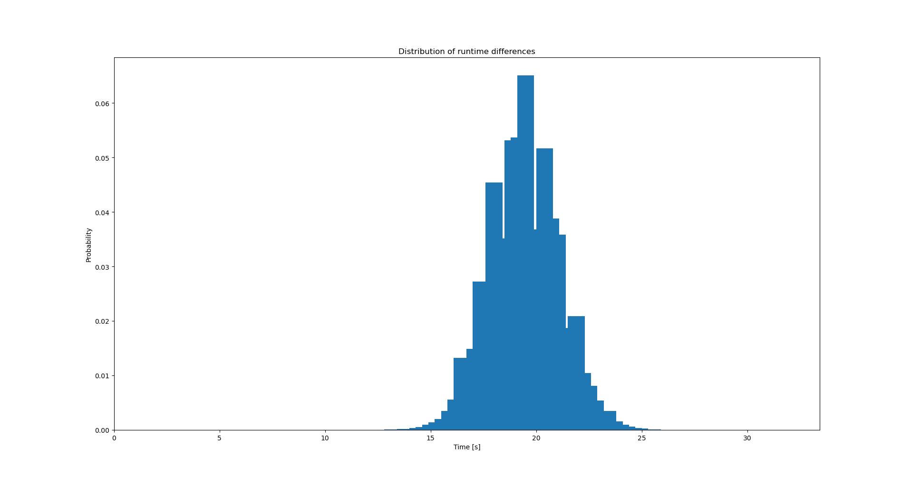
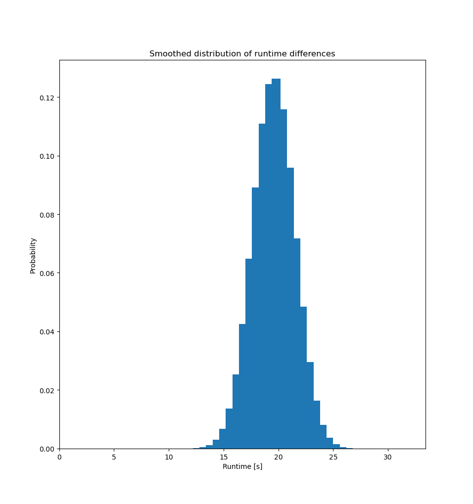

Does hyperthreading make my NOPs go slower?
Table of Contents
1. Introduction
We'll see if executing NOPs on two hyperthreads at the same time makes them finish any faster. This might be an interesting idea in itself, but we'll also introduce some statistical analysis of results. Otherwise, you can't really tell what your experiment data means.
2. Benchmark
3. Code
Code is the same as in our previous experiment, but with lower constants:
section .text global _start SYS_EXIT equ 1 ARG equ 104857600 _start: mov eax, ARG ; store the number of loops in the register loop: nop ; do nothing, burn cycles nop nop ; <snip> ;total of 2048 NOPs nop add eax, -1 ; subtract 1 from loop counter cmp eax, 0 ; test if loop counter is 0 jne loop ; go back to the nops if not finished end: mov eax, SYS_EXIT ; we want exit(2) int 0x80 ; we want it now
4. Running our benchmark
But first, which logical CPUs are located on the same core?
cat /proc/cpuinfo | grep -Ee '^processor' -e '^core id'
As we can see, logical CPU 0 is using the same core as logical CPU 1, logical CPU 2 is sharing core with CPU 3 and so on.
So running it without hyperthreading:
taskset --cpu-list 0 time ./main &; taskset --cpu-list 2 time ./main;
Runnig it by enforcing hyperthreading:
taskset --cpu-list 0 time ./main &; taskset --cpu-list 1 time ./main;
5. Benchmark results
Userspace time in seconds spent on-cpu. The times are grouped into pairs, as we get two times in every trial. We'll disregard this grouping in our analysis later.
| With hyperthreading | Without Hyperthreading |
|---|---|
| 31.17 | 11.53 |
| 31.10 | 11.54 |
| 31.20 | 11.54 |
| 31.19 | 11.54 |
| 31.12 | 11.54 |
| 30.96 | 11.55 |
| 31.08 | 11.54 |
| 30.85 | 11.55 |
| 31.18 | 11.53 |
| 31.17 | 11.54 |
| 31.19 | 11.53 |
| 31.15 | 11.54 |
| 31.20 | 11.55 |
| 31.18 | 11.54 |
| 31.20 | 11.69 |
| 31.17 | 11.56 |
| 31.18 | 11.54 |
| 31.17 | 11.55 |
| - | 11.57 |
| - | 11.56 |
I collected more samples for one of the cases, to demonstrate that we do not need to have an equal sample size.
This benchmark doesn't make hyperthreading look very good! I presume it would be faster to run our nops sequentially! Let's see if statistics can support this idea.
6. Data analysis
Now, how can we tell if there's really a performance difference between these two setups?
The standard way would be to pass the data through:
- Welch's t-test which tells "with probability X these two groups of samples come from different normal distributions"
- Cohen's d which tells "there's that many standard deviations of difference beteween provided distributions.
I find them not very useful since it's hard for me to reason in terms of standard deviations. We'll resort to statistical methods which:
- assume that the runtime difference is always the same
- but the execution and measurement is noisy
- so it'll give us a credible interval where the fixed difference is supposed to be with some probability.
This can be achieved by the following python script. The concept is quite simple - we subtract distributions from each other and get a distribution in return. The credible interval is then the most probable section of the resulting distribution. When calculating we're getting a yes/no answer to the question "is hyperthreading slower than no-hyperthreading execution". For full understanding on why it does what we want I'd suggest reading through the book.
#!/usr/bin/env python3 # Snippets and ideas taken from "Think Bayes Bayesian Statistics in Python" by Allen B. Downey # https://github.com/AllenDowney/empiricaldist/blob/master/empiricaldist/empiricaldist.py # Based on chapter 11 and chapter 13 of the book. import matplotlib.pyplot as plt import numpy as np import pandas as pd from scipy.stats import gaussian_kde, norm from empiricaldist import Pmf data_noht = [ 11.53, 11.54, 11.54, 11.54, 11.54, 11.55, 11.54, 11.55, 11.53, 11.54, 11.53, 11.54, 11.55, 11.54, 11.69, 11.56, 11.54, 11.55, 11.57, 11.56, ] data_ht = [ 31.17, 31.10, 31.20, 31.19, 31.12, 30.96, 31.08, 30.85, 31.18, 31.17, 31.19, 31.15, 31.20, 31.18, 31.20, 31.17, 31.18, 31.17, ] def make_uniform(qs: np.array, name: str) -> Pmf: pmf = Pmf(1.0, qs) pmf.normalize() pmf.index.name = name return pmf def make_joint(pmf1, pmf2) -> pd.DataFrame: """Compute the outer product of two Pmfs""" X, Y = np.meshgrid(pmf1, pmf2) return pd.DataFrame(X * Y, columns=pmf1.qs, index=pmf2.qs) def normalize(joint): """Normalize a joint distribution""" prob_data = joint.to_numpy().sum() joint /= prob_data return prob_data def update_norm(prior, data): """Update the prior based on data.""" mu_mesh, sigma_mesh, data_mesh = np.meshgrid(prior.columns, prior.index, data) densities = norm(mu_mesh, sigma_mesh).pdf(data_mesh) likelihood = densities.prod(axis=2) posterior = prior * likelihood normalize(posterior) return posterior def marginal(joint, axis): """Compute a marginal distribution.""" return Pmf(joint.sum(axis=axis)) def kde_from_pmf(pmf, n=101): """Make a kernel density estimae for a new PMF.""" kde = gaussian_kde(pmf.qs, weights=pmf.ps) qs = np.linspace(pmf.qs.min(), pmf.qs.max(), n) ps = kde.evaluate(qs) pmf = Pmf(ps, qs) pmf.normalize() return pmf # WARNING: the span described by start, stop arguments can't be too big - otherwise you'll get /0 errors. qs = np.linspace(5, 35, num=101) prior_mu = make_uniform(qs, name="mean no hyperthreading") # WARNING: the span described by start, stop arguments can't be too big - otherwise you'll get /0 errors. qs = np.linspace(5, 35, num=101) prior_sigma = make_uniform(qs, name="std no hyperthreading") prior = make_joint(prior_mu, prior_sigma) posterior_noht = update_norm(prior, data_noht) posterior_ht = update_norm(prior, data_ht) pmf_mean_ht = marginal(posterior_ht, 0) pmf_mean_noht = marginal(posterior_noht, 0) prob_gt = Pmf.prob_gt(pmf_mean_ht, pmf_mean_noht) print(f"Hyperthreading version is slower with probability of {prob_gt:.2f}.") pmf_diff = Pmf.sub_dist(pmf_mean_ht, pmf_mean_noht) # plot stuff if needed # pmf_diff.bar() # plt.show() cdf_diff = pmf_diff.make_cdf() kde_diff = kde_from_pmf(pmf_diff) # plot smoothed out graph if needed # kde_diff.bar() # plt.show() mean_diff = pmf_diff.mean() credible_intvl = pmf_diff.credible_interval(0.95) print( f"Hyperthreading version is on average {mean_diff:.2f}s slower than no-HT version." f" With 95% probability no-HT version is faster than HT version by a value between {credible_intvl[0]} and {credible_intvl[1]} seconds." )
The code calculates distribution of differences between runtimes

and smoothes it out:

which is then used to calculate what we need and report the results:
Hyperthreading version is slower with probability of 1.00.
Hyperthreading version is on average 19.58s slower than no-HT version. With 95% probability no-HT version is faster than HT version by a value between 16.2 and 22.8 seconds.